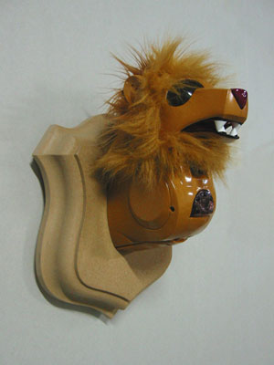
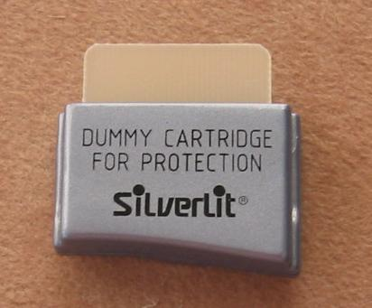
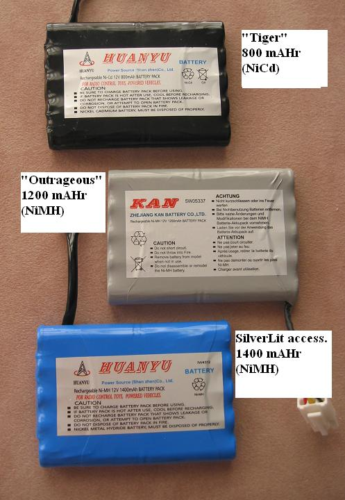

[AiboHack]
ICybiePet's ICybie Site
General Info (all users)
WARNING: many of the i-Cybie websites have gone away, including the often popular forums on i-cybie.com.
Recommended viewing the artistic robo creations by France CADET:

Cartridge Users
YICT Authors (advanced)
Super ICybie RS-232 Upgrade, programming in C
Downloadable Cartridge Personalities
|
NOTE: you need a real working cartridge, not a "dummy".

USE AT YOUR OWN RISK
Downloadable Cartridge personalities require a working cartridge, and either a
SilverLit I-Cybie Downloader ($105+s/h) or a Super ICybie.
You should already be familar with how to download personalities to a cartridge (using the Downloader or SIC serial interface).
The YICT tool will launch ICBURN or SICBURN to download personalities to a cartridge for you.
Overview
You need a working cartridge (like one that came with the Downloader or Walk-up Charger).
Every ICybie comes with a blank cartridge (it is not a working cartridge).
The recommended way to transfer these personalities to the cartridge is the SilverLit
Downloader
($105, which comes with a working cartridge).
These cartridge programs will work with any known version of the system ROM.
These programs do not alter the system ROM (so your existing ICybie personality remains intact).
Remove the cartridge and your ICybie will work like before, or use the dual boot feature.
Required Hardware:
- A standard ICybie
- A working cartridge (not a blank one)
- Downloader (the actual hardware device connected to your PC's parallel port)
YICT202 All-In-One Release
Installation Instructions
- Download this file yict202.zip (1.8MB)
- Unzip to your computer (into a unique folder, such as "C:\YICT")
- This includes the main program (YICT202.EXE), and a number of pre-built personalities (*.BIN).
Each personalities requires two .BIN files (???-L.BIN, ???-H.BIN)
- Also included are ICBURN (for the parallel port Downloader) and SICBURN (for the serial port Super ICybie).
- You can immediately download the pre-built personalities into a working cartridge (using the SilverLit Downloader.exe program, or ICBURN or SICBURN).
However, you may want to tweek a few of the settings,
and then download to the cartridge directly from YICT.
Please see the Easy YICT Features tutorial for instructions and suggestions.
Contents:
- YICT202.EXE - Windows program for easy tweeking as well as more powerful behavior editing
- ICBURN.EXE - Programmer for Downloader (parallel port)
- SICBURN.EXE - Programmer for Super ICybie (serial port)
- README202.TXT - other info, credits etc
- Personalities (???-l.bin, ???-h.bin)
- generic202 - generic default personality (no sounds)
- zcybie202 - generic with zCybie2 behavior (no sounds) [by -Z-]
[others using zCybie2 behavior]
- scooby202 - Scooby sounds [by Paul]
- cartman202 - Cartman
- goddard202 - Goddard, Jimmy Neutron's dog [by igymnast]
- tigger202 - Tigger [by Paul]
- pooh202 - Pooh [by Paul]
- mojo202 - Mojo JoJo, PowerPuff killing machine
- borg202 - Borg [by Michael]
- klingon202 - Klingon [by Michael]
- k9_202 - K9 [by Paul]
- Behaviors (???.icb)
- Generic.icb - Generic default personality ('Import Behavior'), boring.
- zCybie2.icb - Entertaining personality provided by -Z- ('Import Behavior').
- ???.icb - other older behavior personalities
(NOTE: can be imported using the 'Import Personality' feature)
NOTE: Dual Boot Feature:
When i-Cybie's eyes turn green at startup, you can either:
press the head button to run the cartridge normally, OR
press the nose button (ICybie will wink) followed by the head button to run the built-in personality, OR
press the back button to force leg recalibration immediately. When complete the dog will YIP and then start over.
Notes/Credits/Copyright
NOTE: contains software directly from or derived from a variety of sources including:
ICybie itself, SilverLit released software,
contributions from other ICybie owners,
and my own ICybiePet creations.
Everything is (implicitly) copyrighted by their respective owners.
Uses other than within an ICybie robot are not permitted.
None of this content may be sold.
In addition to specific credits mentioned for creation of personalities above, general credit also
goes to Wade for modifications/suggestions and -Z- for the base zCybie1/zCybie2 behaviors.
Due to lack of interest, this is essentially "abandon-ware" with no planned future improvements.
